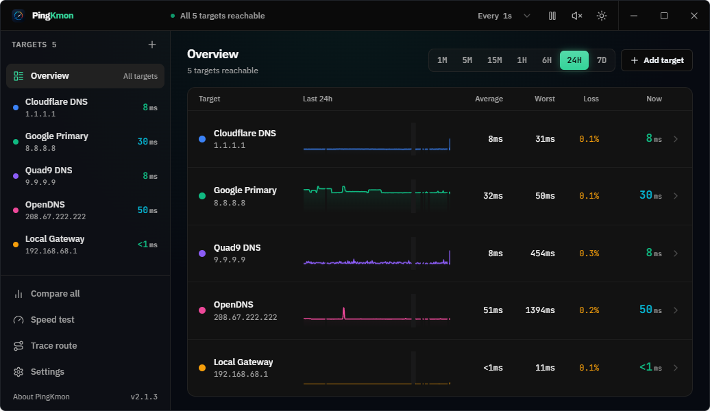
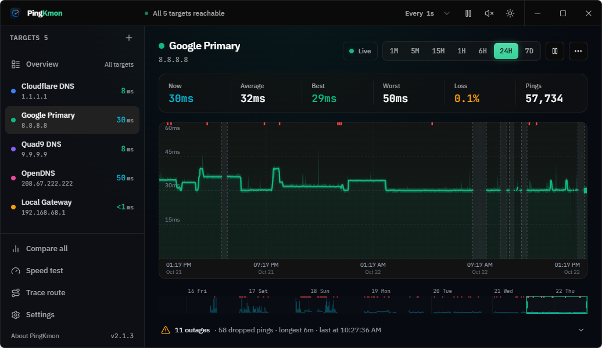

PingKmon keeps an eye on the websites, servers and devices you care about, shows how fast each one answers, and remembers every drop for a week.
Or with Chocolatey: choco install pingkmon

No account, no ads, and your monitoring data never leaves your PC. PingKmon runs on your machine and keeps watching from the tray with only a few megabytes of memory.
Every target is checked every second, with a clear color for great, good, slow and down.
Scroll back seven days, zoom from a whole week down to seconds, and see every outage and how long it lasted.
A short tone when a target slows down or stops answering, even while the window is closed.
Measure download and upload speed to nearby or international servers, and keep a list of past results.
See every step between you and a target, and exactly where the delay starts.
Put all your targets on one chart to tell a slow website apart from a slow connection.

Pick a range from one minute to seven days, drag back in time, and use the strip below the chart to jump straight to the rough patches.
For people who need to know about outages even when they are away from their PC, and who want proof to show their internet provider.
Everything PingKmon does today stays free. Your email is only used to tell you about PingKmon Pro (privacy).
One short form, under a minute. Leave your email to hear when Pro is ready.